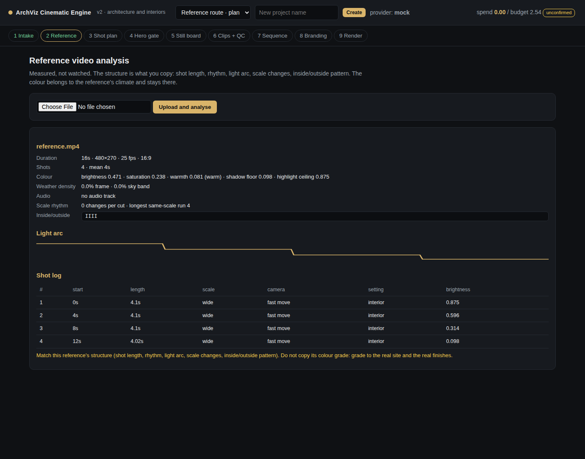
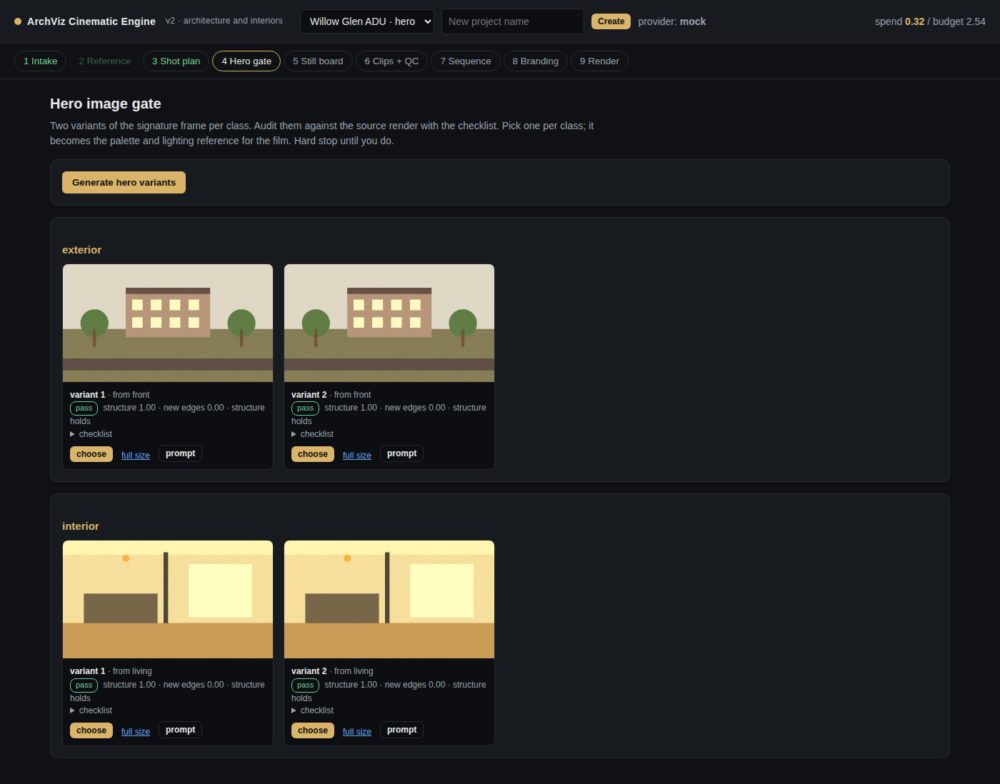
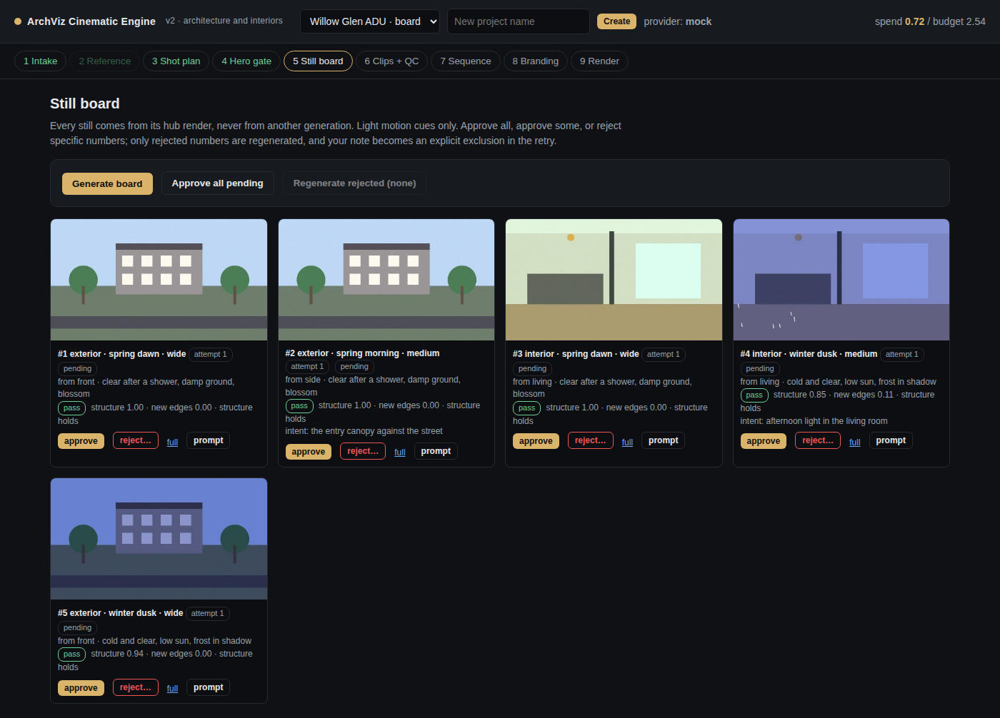

Nine stages. You approve every one, and nothing expensive happens before you do.
1. Intake
Upload one to eight renders. The app detects whether each is exterior or interior along with its light state, and you name the actual finishes so prompts use your words rather than invented ones. Stating which way an exterior camera faces is what puts the sun on the correct side of the building.
What the questionnaire changes
You choose
What it drives
Location
Climate, hemisphere, vegetation, wet and snow months, and the sun path. Required, because generic prompts give generic results.
Orientation
Which side the sun falls on, per shot and per time of day.
End use
Defaults. Planning consultation turns people off, restrains the weather and puts the disclaimer on every frame.
Design intents
The three things you most want the client to notice. Each becomes a shot. A time word inside one sets that shot’s time.
Interior emphasis
Preferred times, artificial lighting state and the room cue baked into interior shots.
2. Direction: a brief, or a reference film

A reference film is measured, not watched. Shot detection, per-shot length, the light arc, colour statistics, weather density and the inside-outside rhythm all come out as numbers.
What the measurement then drives:
Measured
Drives
Per-shot length
Each clip’s own duration, clamped to 2 to 10 seconds
Inside and outside pattern
Whether each shot is exterior or interior
Per-shot scale
The scale of each shot, subject to the never-three-in-a-row rule, which still wins
Light-arc shape
The time arc. A falling curve runs afternoon to night, a rising one dawn to afternoon.
Structure is copied; colour is not. A reference film’s grade belongs to its own climate. A Japanese cedar forest is warm and olive; a Himalayan slate house under monsoon is cool and blue-grey. Matching the grade to the wrong site is the most common way these films look wrong.
3. The shot plan
A deterministic planner, so a change to the brief has a predictable effect on the plan. Every row is editable before anything is generated.
Scale pyramid. Wide, medium, detail, then back out. Never three of the same scale in a row.
One arc per axis. A year runs in calendar order for the site’s hemisphere; a day runs dawn to night; both run the same direction.
Chapter closers. Each season block ends on its widest shot.
Human beats at the edges, never clumped in the middle.
One heavy weather beat at most. The rest stay restrained.
Approach, enter, dwell, detail, return when both exteriors and interiors exist.
4. The hero gate

Two variants of the signature frame per class. Each is audited against its source render and rated, with the checklist a designer runs by eye. The one you pick becomes the palette and lighting reference for the whole film. A hard stop until you choose.
5. The still board

Every still comes from its hub render, never from another generation. Approve all, approve some, or reject specific numbers. Only rejected numbers are regenerated, and the reason you give becomes an explicit exclusion in the retry prompt.
Light motion cues only. Image-to-video models animate only what is already visibly moving in the still. But over-correcting is worse: heavy painted rain gets held static and reads as a frozen plastic overlay. A few sparse streaks near camera, drips from one eave, one wisp of mist.
6. Clips, each one measured
Every clip is scored before it is shown. A failure is named with its cause, and a regeneration has to change something real: the camera, the cue weight, or the weather. After two attempts the engine recommends cutting the shot rather than burning a third.
A suggested order with its reasoning, then drag freely. The strip shows the light arc, and warnings flag three same-scale shots in a row or a continuity break inside a chapter.The render is verified, not assumed: duration against what was planned, resolution, the brightness arc and measured loudness. Then the film, crop-only variants, the stills pack and the project record.